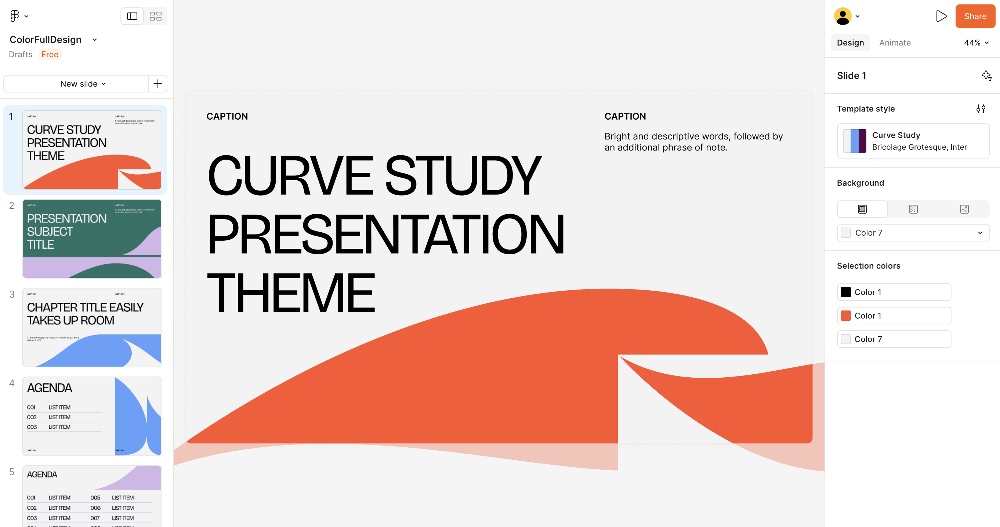
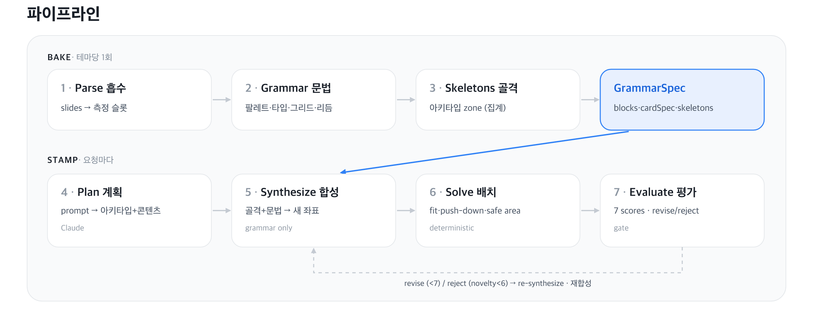
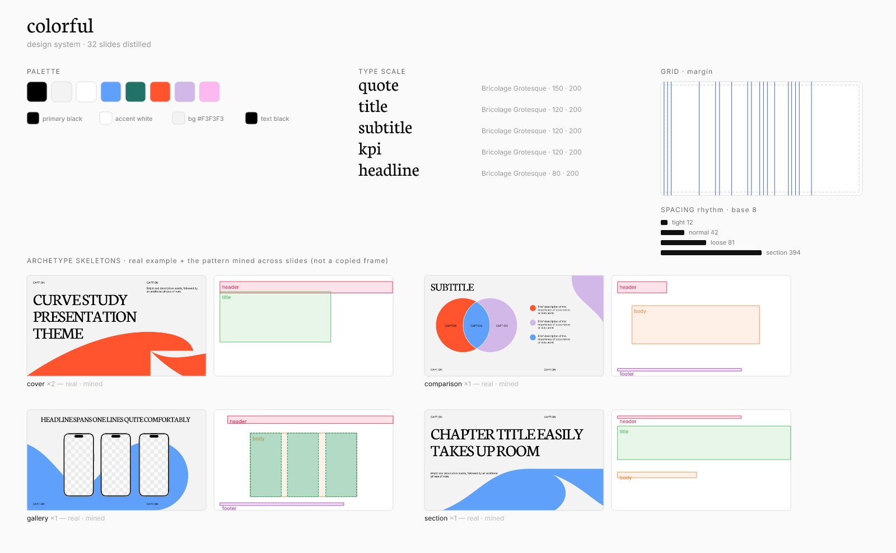
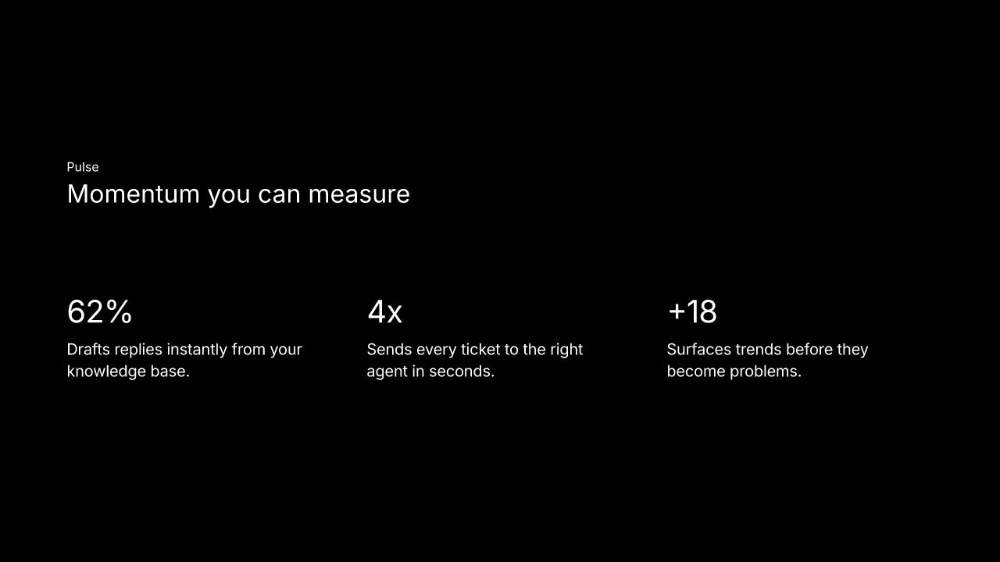

미리캔버스 AI 팀 인턴 지원을 준비하며 혼자 만든 프로젝트예요. 시작은 질문 하나였어요. "좋은 템플릿의 감각을, 코드가 재사용할 수 있는 규칙으로 바꿀 수 있을까?"
결론부터 말하면 AI가 결정할 범위를 정하는 일이었어요.

문제는 생성 능력이 아니었어요
지원을 준비하면서 AI 프레젠테이션 서비스를 여러 개 써봤어요. 그런데 결과가 생각만큼 잘 나오지 않았어요. 템플릿이 허용하는 범위 안에서만 만들어지고, 페이지 단위로 고치는 건 자유롭지 않았거든요.
처음엔 모델 성능 문제로 봤는데, 뜯어볼수록 다른 결론에 닿았어요.
문제는 AI의 생성 능력이 아니라,
생성할 수 있는 디자인의 범위가 정의되지 않은 것 아닐까?
그래서 프로젝트를 진행하며 원칙 하나를 세우게 됐어요. "AI는 의미를 판단하고, 배치는 코드가 수행한다."
규칙을 굽고, 규칙으로 찍었어요
파이프라인은 두 단계로 나눴어요. 테마당 한 번 도는 BAKE와, 요청마다 도는 STAMP예요.

1) BAKE — 템플릿 분석
템플릿을 한 번 분석해 색 팔레트 · 글자 크기 체계 · 격자 · 레이아웃 골격을 하나의 규칙 묶음으로 정리해요. 원본을 복사·붙여넣기 하지 않고, 이후에는 추출한 규칙만 재사용해요.

2) STAMP — 슬라이드 생성
요청이 오면 그 규칙만으로 좌표를 새로 계산해요. AI는 "KPI 3개니까 3열 카드"처럼 레이아웃 의미만 고르고, 실제 위치·크기·정렬은 코드가 격자와 실측값으로 계산하도록 했어요. AI가 좌표·색·크기를 직접 결정하지 못하도록 출력 구조 자체를 제한했어요.
3) 품질 자동 채점
만든 슬라이드를 7개 지표로 자동 채점하고, 동시에 원본 템플릿과 얼마나 다른지도 점수로 매겨요. 지나치게 유사하거나, 기준에 미달한 결과는 자동으로 수정하거나 폐기하도록 했어요.
자유도를 줄여서 품질을 얻었어요
가장 크게 망가진 건 배경 장식이었어요. 화면을 채워야 자연스러운 장식을 작게 줄여 모서리에 처박거나, 구석용 작은 장식을 화면 절반만 하게 키웠죠. 큰 장식을 가져와 구석 장식의 문법으로 배치한 거예요.
배치 규칙을 아무리 정교하게 써도 같은 실패가 반복됐어요. 장식은 에셋 자체보다 원래 쓰인 크기와 위치의 관계가 중요했거든요.
결국 자유로운 변형을 포기했어요. 원본의 크기·위치는 고정하고 AI는 조합을 고르거나 색만 바꾸게 했어요. 생성 자유도는 줄었지만 실패 가능성과 품질 편차가 크게 낮아졌어요.


잘 만드는 것보다, 망가지지 않게
품질 하한은 코드가 강제하게 했어요.
- 안전 여백 ≥ 5%
- 최소 글자 크기 약 18px
- 핵심 글자 크기 약 54px
- 요소 간 겹침 0
이 값들은 처음부터 정한 게 아니라 실패를 보고 거꾸로 다듬은 것이에요. 화면에서 안 읽히는 글씨를 발견할 때마다 최소 크기를 올렸고, 그 결과 하한이 12px에서 18px로 바뀌었어요. 규칙이 먼저가 아니라 실패가 먼저였죠.
AI 평가는 아직 못 믿었어요
렌더링된 슬라이드를 AI가 채점하게 하는 것도 실험했어요. 그런데 사람이 보기엔 엉성한 결과를 AI가 높게 평가하는 경우가 반복됐어요.
겹침·정렬·여백 같은 명확한 오류는 규칙으로 잡히는데, 디자인의 의도와 문법은 점수로 판별되지 않았어요. 잘 만드는 문제와 잘 골라내는 문제는 서로 다른 난제였죠.
자료를 찾아보며 Anthropic의 프론트엔드 디자인 관련 글을 읽고 같은 지점을 확인했어요. 모델은 지시가 없으면 학습 분포의 가장 안전한 중앙값으로 수렴해요. 그래서 품질을 올리는 방법은 자유를 더 주는 게 아니라 판단할 축을 나눠주고, 피할 것과 택할 것을 지정하는 것이었어요. 제가 규칙을 좁혔을 때 결과가 좋아진 이유도 같았죠. 자유를 뺀 게 아니라 판단할 축을 정해준 거였어요.
자유도는 프롬프트 한 줄로 늘어나지만, 품질의 하한은 설계해야만 생겨요. 이 프로젝트에서 결과의 편차를 줄인 것도 모델을 더 잘 쓴 게 아니라, 못 하게 막아둔 범위를 정한 쪽이었어요. 그래서 지금은 AI 기능을 볼 때 무엇을 고정할지부터 정해요. 고정된 게 있어야 나머지를 맡길 수 있으니까요.
이어지는 글새로 만드는 대신, 찾아서 쓰면 안 될까?